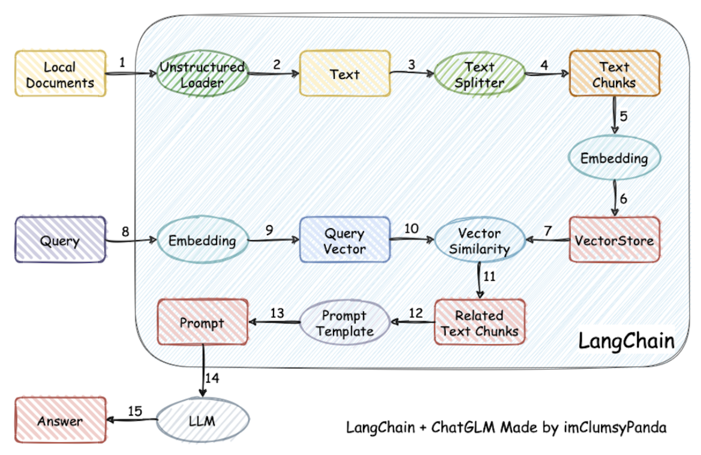
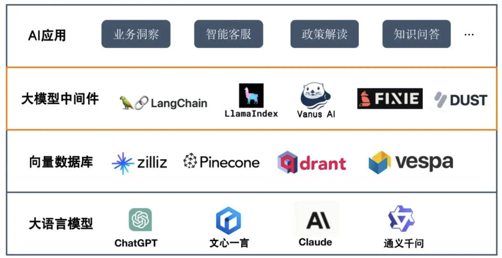

大模型流程构建工具调研
通用大模型
垂直大模型
- 在通用大模型基础上，结合自身行业数据进行微调，可能带有外挂知识库
- 结合特定行业的数据改变数据的分布，重新进行预训练，直接打造行业大模型
- (文本，专属预言)pair对大模型进行微调，完成【用户输入 – 大模型 – 专属语言输出 – 自有 AI 模型 – 业务结果输出】的全过程
什么样的问题必须依靠大模型的能力？
要用大模型，就必须关注到业务场景中是否有非结构化的数据需要处理。
通义千问
1 | pip install dashscope --upgrade |
ChatGLM + LangChain
ChatGLM-6B
- 自我认知能力
- 提纲写作能力
- 文案写作能力
- 信息抽取能力
ChatGLM-6B应用：大语言模型基于通识知识进行训练，在面对实际场景时，需要借助模型微调或提示词工程提升语言模型应用效果，具体包括a.垂直领域知识 b.基于私有数据的问答
| | 是什么 | 使用场景 |
| ————— | —————————————————————————————- | ——————————————————————————————|
| 微调/精调 | 针对预先训练的语言模型，在特定任务的少量数据集上对其进行进一步训练 | 当任务或域定义明确，并且有足够的标记数据可供训练时，通常使用微调过程。 |
| 提示词工程 | 涉及设计自然语言提示或指令，可以指导语言模型执行特定任务 | 最适合需要高精度和明确输出的任务。提示工程可用于制作引发所需输出的查询。 |- langchain-chatchat本身就是基于提示词工程的应用
LangChain：是一个用于开发由语言模型驱动的应用程序的框架
- 功能模块：
- Modules：支持的模型类型和集成
- Prompt：提示词管理、优化和序列化
- Memory：内存是指在链/代理调用之间持续存在的状态
- Indexes：当语言模型与特定于应用程序的数据相结合时，会变得更加强大-此模块包含用于加载、查询和更新外部数据的接口和集成
- Chain：链是结构化的调用序列
- Agents：代理是一个链，其中LLM在给定高级指令和一组工具的情况下，反复决定操作，执行操作并观察结果，直到高级指令完成
- Callbacks：回调允许您记录和流式传输任何链的中间步骤，从而轻松观察、调试和评估应用程序的内部
- 应用场景：文档问答、个人助理、查询表格数据、与API交互(newbing)、信息提取、文档总结
- 功能模块：
基于单一文档问答的实现原理

LangChain早期项目的流程原理图

a) 简单来说就是把本地的一些文档( doc txt md csv json …) 先通过一系列处理（ 读取 分词 ）embedding模型编码成一定数量的高维向量 （图中 1到6）
b) 而用户原本直接和LLM对话的文本 也会通过embedding 模型编码成高维向量 （图中 8 9）
c) 然后通过计算余弦相似度的方式 （图中10和7） 来检索本地文档库中可能提供帮助的相关资料
d) 再和原用户的问题文本 结合 （图中11）
e) 经过预先我们准备好的提示词模板 Prompt Template 组装成最后的 Prompt 提示词 （图中12 13）
f) 去问LLM （图中14 15）
代码实现
1
2
3
4
5
6
7
8
9
10
11
12
13
14
15
16
17
18
19
20
21
22
23
24
25
26
27
28
29
30
31
32
33
34
35
36# 启动模型
from transformers import AutoTokenizer, AutoModel
tokenizer = AutoTokenizer.from_pretrained("THUDM/chatglm-6b", trust_remote_code=True)
model = AutoModel.from_pretrained("THUDM/chatglm-6b", trust_remote_code=True).half().cuda()
chatglm = model.eval()
from langchain.document_loaders import UnstructuredFileLoader
from langchain.text_splitter import CharacterTextSplitter
from langchain.embeddings.openai import OpenAIEmbeddings
from langchain.vectorstores import FAISS
# 定义文件路径
filepath = "test.txt"
# 加载文件
loader = UnstructuredFileLoader(filepath)
docs = loader.load()
# 文本分割
text_splitter = CharacterTextSplitter(chunk_size=500, chunk_overlap=200)
docs = text_splitter.split_text(docs)
# 构建向量库
embeddings = OpenAIEmbeddings()
vector_store = FAISS.from_documents(docs, embeddings)
# 根据提问匹配上下文
query = "Langchain能够接入哪些数据类型？"
docs = vector_store.similarity_search(query)
context = [doc.page_content for doc in docs]
# 构造Prompt
prompt = f"已知信息: \n{context}\n根据已知信息回答问题：\n{query}"
# llm生成回答
chatglm.chat(tokenizer, prompt, history={})LangChain + ChatGLM
针对langchain改进的点：
- 除了openai外可适配更多的开源模型
- 相比于langchain的document_loader可适配更多的数据源
在分句、文档读取等方面，针对中文使用场景进行了优化
具体模块体现在：
models：llm的接口类与实现类，原本langchain只支持chatgpt的流式输出，chatchat增加了对很多开源模型的流式输出支持
- loader：文档加载器的实现类，预置了更多pdf_loaders，对中文的支持更好
- Textsplitter: 文本切分的实现类，对中文的切分更好
- chains：工作链路实现（后续会增加库表、知识图谱等chain），目前基于chains/local_doc_qa实现基于本地文档的问答实现
- content：用于存储上传的原始文件，对原始信息的准确度匹配性检查
- vector_store: 用于存储向量库文件，包括.index文件等，即本地知识库本体
- configs：存储文件配置项信息
做本地知识库的时候，值得优化的方向
- 对llm使用整理好的具有明确标记的问答来进行微调
- 对通用领域的embedding模型进行基于专业领域数据的再训练
- 文档加工：1）文本分段重排 2）文档加工，在文本分段后，对每段分别进行总结，基于总结内容语义进行匹配
- 借助不同模型能力，数据库接入、知识图谱接入等场景可利用text2sql或text2cpyher等模型，再把结果给到语言模型来生成最终的回答
LlamaIndex
LlamaIndex是一个用于LLM应用程序的数据框架，用于注入，结构化，并访问私有或特定领域数据。
- LlamaIndex的目的是使用私有或特定领域数据来增强这些模型。这些数据可能分布在不同的应用程序和数据存储中。它们可能存在于API之后、SQL数据库中，或者存在在PDF文件以及幻灯片中。
大模型生态
